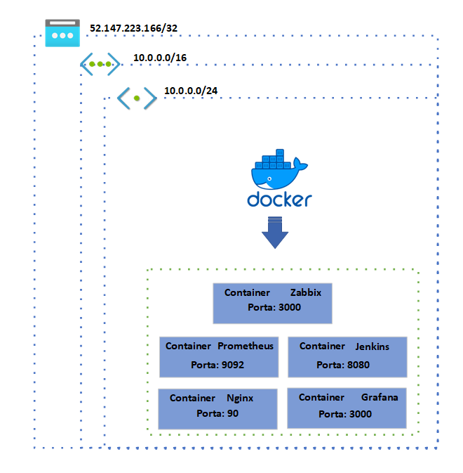

Observabilidade
As ferramentas de observabilidade auxiliam na verificação da saúde de redes, aplicações, sites e outros sistemas, fornecendo insights valiosos sobre seu desempenho e funcionamento. Através delas, é possível coletar e analisar dados, possibilitando identificar problemas e otimizar o ambiente de forma eficiente.
Segurança
FortiGate e SonicWall são soluções de segurança líderes no mercado, fornecendo proteção avançada e confiável para redes e sistemas, garantindo a defesa contra ameaças cibernéticas e mantendo a integridade dos dados.
Infraestrutura
AWS e Azure são plataformas de nuvem líderes que oferecem uma ampla gama de serviços e recursos para hospedar e gerenciar aplicativos e dados de forma escalável e segura. Além disso, servidores on-premises fornecem controle total sobre a infraestrutura, permitindo que as organizações mantenham seus dados e aplicativos localmente, garantindo a conformidade e a segurança dos dados sensíveis.
Automação
Docker é uma plataforma de virtualização de contêineres que simplifica o processo de empacotamento e implantação de aplicativos, permitindo a criação de ambientes isolados e consistentes em diferentes sistemas operacionais. Git é um sistema de controle de versão distribuído amplamente utilizado para rastrear e gerenciar alterações no código-fonte, facilitando o trabalho colaborativo e o controle de alterações em projetos de desenvolvimento. Jenkins é uma ferramenta de automação de integração contínua que permite a construção, teste e implantação automatizados de aplicativos, agilizando o processo de desenvolvimento e garantindo a qualidade do software entregue.
Fluxo
A hospedagem deste site está em um container nginx.
Após escrito, o site é publicado em um repositório do Github.
O Jenkinks possui uma rotina que sincroniza o repositório e atualiza o
container do site.
